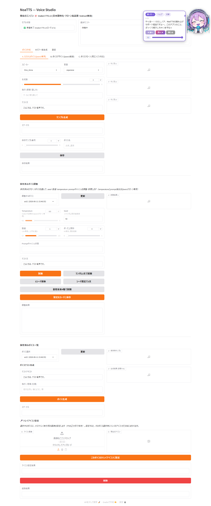
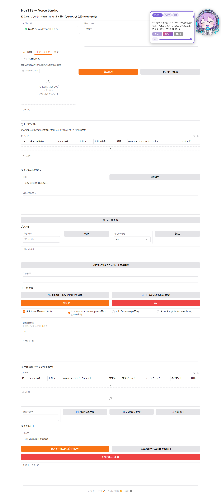
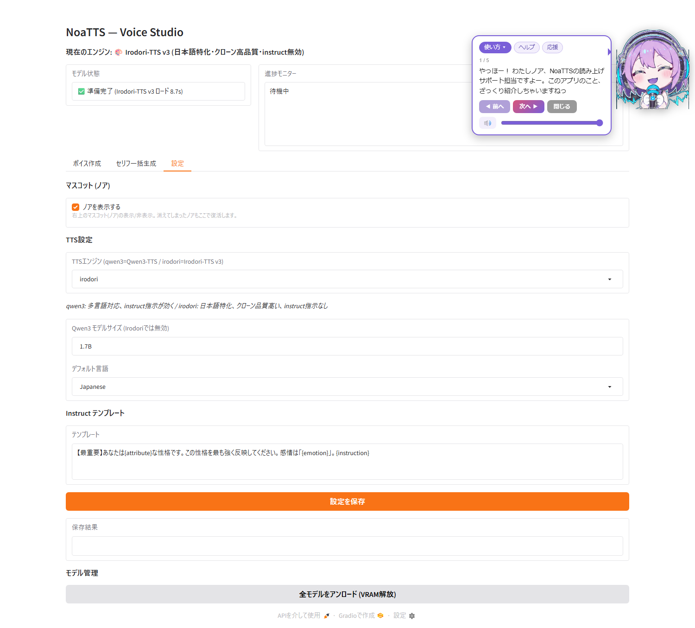

共通ヘッダ (タイトル/エンジン表示/モデル状態/進捗モニター)
app.py + engine_control.pyメインタブバー
app.pyサブタブ A/B/C (表示中: A. カスタムボイス)
ui_voice_create/ → voice_creation.py保存済みボイス調整 (一覧も統合)
ui_voice_create/tuning_panel.py(統合済) 一覧→調整パネル
ui_voice_create/tuning_panel.pyマスコット
mascot.py
共通ヘッダ (タイトル/エンジン表示/モデル状態/進捗モニター)
app.py + engine_control.pyメインタブバー
app.py① ファイル読み込み
batch/script_io.py② セリフテーブル
batch/state.py③ キャラ⇔ボイス紐付け
batch/generation.pyプリセット保存/読込
preset_manager.py④ 一括生成 (心臓部)
batch/generation.py⑤ 生成結果 (再生/再生成/チェック/NGレポート)
batch/results.py⑥ エクスポート
batch/script_io.py
共通ヘッダ (タイトル/エンジン表示/モデル状態/進捗モニター)
app.py + engine_control.pyメインタブバー
app.pyマスコット表示 ON/OFF
app.py (UI) + mascot.py (JS)TTS設定 (エンジン切替・言語・テンプレート)
app.py → engine_control.pyモデル管理 (VRAM解放)
engine_control.py